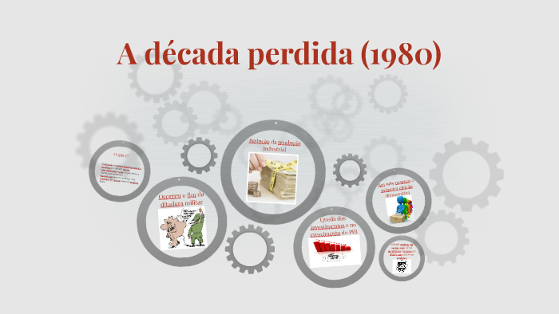

Desafios enfrentados
Nesse tópico iremos falar sobre alguns desafios que foram enfrentados pela Geração Y, os Millennials. Leia
abaixo e aproveite.
- Nos anos 1980, a América Latina viveu a chamada “década perdida” na economia, com
indicadores como PIB, inflação e emprego apresentando resultados fracos. No Brasil, a
desaceleração foi severa, mas, no campo político, houve avanços significativos, como o
fim da ditadura e a promulgação da Constituição de 1988.
- A pandemia de AIDS/HIV começou a se espalhar no início dos anos 1980. No Brasil, o
primeiro caso foi registrado em 1983, com a doença inicialmente estigmatizada e a
resposta governamental limitada. Com o tempo, houve avanços em testes, tratamentos e
campanhas de prevenção.
- A crise econômica dos anos 1980 no Brasil foi marcada por alta inflação e aumento da
dívida pública. Planos econômicos como o Plano Cruzado (1986), Plano Bresser (1987) e
Plano Verão (1989) tentaram, sem sucesso duradouro, estabilizar a economia.
- Os anos 1980 também foram marcados por conflitos e eventos globais significativos, como
a independência do Zimbábue, a Guerra das Malvinas, o fim da Guerra Irã-Iraque, a
retirada soviética do Afeganistão, a Guerra do Alto Carabaque e a queda do Muro de
Berlim, que simbolizou o fim da Guerra Fria.
Crise Econômica

Nos anos 1980, a América Latina experimentou o que ficou conhecido como “a década perdida” no âmbito
econômico. Os indicadores econômicos, que incluem taxas de crescimento do PIB, inflação, produção
industrial, poder de compra dos salários, nível de emprego e balanço de pagamentos, apresentaram resultados
medíocres. No Brasil, a desaceleração econômica foi particularmente severa, resultando em uma queda
acentuada em relação às médias de crescimento dos cinquenta anos anteriores.No entanto, do ponto de vista
político, os anos 1980 foram uma década de avanços significativos. Durante esse período, surgiram e se
consolidaram diversas entidades e partidos populares, resultado das maiores mobilizações sociais da história
brasileira. Além disso, o Brasil entrou em uma nova fase histórica com o fim da ditadura e a promulgação da
Constituição de 1988.
Pandemia de AIDS/HIV
No início dos anos 1980, o HIV (Vírus da Imunodeficiência Humana) e a AIDS (Síndrome da Imunodeficiência
Adquirida) começaram a ser identificados. Inicialmente, a doença foi associada a grupos específicos, como
homossexuais e usuários de drogas injetáveis, o que levou a um estigma significativo e a uma resposta
inicial limitada. Com o tempo, a epidemia se espalhou para outras populações e regiões, incluindo a África
Subsariana, onde teve um impacto particularmente devastador. Nos primeiros anos, a resposta global foi
ineficaz devido à falta de conhecimento sobre o vírus e à resistência em lidar com a questão devido ao
estigma. No entanto, a situação começou a mudar à medida que a compreensão sobre o HIV avançou, levando ao
desenvolvimento de testes, tratamentos e campanhas de prevenção.
O primeiro caso de AIDS no Brasil foi registrado em 1983. O surto rapidamente se espalhou, afetando
principalmente homossexuais e usuários de drogas injetáveis. A resposta inicial do governo e das autoridades
de saúde foi limitada, marcada por falta de recursos e conhecimento adequado. A estigmatização e a
desinformação contribuíram para a discriminação e o silêncio em torno da doença, afetando profundamente a
vida das pessoas acometidas.
Crise Econômica e Inflação
Na década de 1970, após um breve período de estabilização, os gastos públicos do governo cresceram
exponencialmente, acompanhados por um aumento no endividamento externo. Segundo um estudo de um núcleo de
pesquisa da UFRJ, os empréstimos estrangeiros eram baseados em juros flutuantes, que variam conforme as
condições econômicas.
O problema surgiu quando o preço do petróleo aumentou consideravelmente em alguns momentos da década,
resultando em reajustes globais. Além disso, o aumento das taxas de juros nos Estados Unidos tornou mais
atraente para os investidores aplicar seus recursos lá, em vez de no Brasil, o que provocou uma fuga de
capitais do país. Após o superendividamento, a economia entrou em um ciclo de declínio. Em 1981, o governo
implementou um programa de estabilização econômica, que, no entanto, falhou. As dívidas já eram
excessivamente altas e, temendo um calote, o FMI interrompeu os empréstimos.
Diante da falta de recursos para honrar as dívidas, a solução foi emitir títulos da dívida pública para que
investidores pudessem adquiri-los. Com juros extremamente elevados, essa medida visava atrair investidores
dispostos a assumir o alto risco.
Comprometer as finanças com juros altos, vinculados à inflação, foi um erro grave que custaria caro ao
Brasil. A dívida interna saltou para 50% do PIB, aumentando ainda mais os prazos de pagamento. Pesquisadores
apontam que isso ilustra a falta de crédito do país e a completa estagnação econômica.
A consequência dos títulos públicos com juros elevados foi a migração dos investimentos do setor privado
para o setor público, devido à sua alta rentabilidade. Isso levou ao aumento do desemprego, uma vez que os
investimentos na indústria diminuíram. Esse cenário criou uma bola de neve que, eventualmente, resultou em
hiperinflação.
Na intenção de melhora da situação crítica da economia brasileira, elaborou-se alguns planos econômicos:
Plano Cruzado (1986): Introduzido pelo governo de José Sarney e
elaborado pelo economista João Paulo dos
Reis Velloso, o Plano Cruzado tentou estabilizar a economia por meio da criação de uma nova moeda, o
cruzado, e o congelamento de preços e salários. Embora tenha inicialmente trazido alguma estabilização, o
plano acabou falhando devido a problemas estruturais e ao retorno da inflação.
Plano Bresser (1987): O Plano Bresser, implementado pelo então ministro
da Fazenda, Luiz Carlos
Bresser-Pereira, buscou controlar a inflação por meio de uma série de reformas econômicas, incluindo o
ajuste fiscal e o controle dos preços. No entanto, o plano não conseguiu resolver o problema da inflação de
maneira duradoura.
Plano Verão (1989): O Plano Verão, implementado pelo governo de José
Sarney e elaborado por Maílson da
Nóbrega, introduziu uma nova moeda, o "cruzeiro", e buscou controlar a inflação por meio de uma política de
estabilização monetária. Embora tenha tido algum sucesso inicial, o problema da inflação não foi
completamente resolvido.
- Em 1980, o Zimbábue conquistou sua independência do Reino Unido.
- Em 2 de abril de 1982, a Argentina invadiu as Ilhas Malvinas, iniciando a Guerra das Malvinas entre a
Argentina e a Grã-Bretanha.
- Em 1988, terminou a guerra entre Irã e Iraque, um conflito de oito anos que começou em 1980 e foi
marcado
por intensos combates terrestres e ataques aéreos.
- Em 5 de fevereiro de 1989, a União Soviética retirou suas tropas da Guerra do Afeganistão.
- Em 1988, começou a Guerra do Alto Carabaque entre a Armênia e o Azerbaijão, que só terminou em 1994.
- Em 9 de novembro de 1989, ocorreu a queda do Muro de Berlim, um ato simbólico que sinalizou o fim da
Guerra
Fria.
Alguns acontecimentos no mundo e no Brasil:
- Em 1980, o Zimbábue conquistou sua independência do Reino Unido.
- Em 2 de abril de 1982, a Argentina invadiu as Ilhas Malvinas, iniciando a Guerra das Malvinas entre a
Argentina
e a Grã-Bretanha.
- Em 1988, terminou a guerra entre Irã e Iraque, um conflito de oito anos que começou em 1980 e foi
marcado por
intensos combates terrestres e ataques aéreos.
- Em 5 de fevereiro de 1989, a União Soviética retirou suas tropas da Guerra do Afeganistão.
- Em fevereiro de 1980, foi fundado o PT (Partido dos Trabalhadores) em São Paulo.
- Em 1981, Rondônia deixou de ser um território e se tornou um estado da federação brasileira.
- Em 1984, surgiu o movimento Diretas Já, que clamava pelo retorno das eleições diretas para a presidência
do
Brasil.
- Em 1985, Tancredo Neves foi eleito presidente do Brasil de forma indireta, mas faleceu antes de tomar
posse. O
vice-presidente José Sarney assumiu o cargo, marcando o fim da Ditadura Militar no Brasil.
- Em 1986, começou o processo de integração europeia com a criação da União Europeia.
- Em 1988, Amapá e Roraima foram elevados à categoria de estados brasileiros, deixando de ser territórios.
- Em 5 de outubro de 1988, foi promulgada a Constituição Brasileira, que está em vigor até hoje.
- Em outubro de 1988, foi criado o estado de Tocantins.
Por Gabrielly Fabricio, Em SENAI - Marília
Fontes:
https://querobolsa.com.br/revista/geracao-y